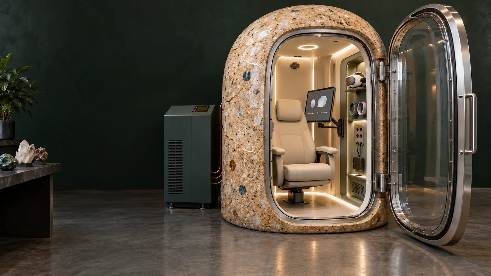

PATHWAY 02 / GEOPOLYMER GEODE · VERSION 1
Cast a mineral environment.
Traceable quartz-rich feedstock, geopolymer recipes and serviceable cast panels create the first Geode materials programme. Local compute remains separate.
Feedstock origin and permissions.
The source design proposes quartz-rich Straddie sand as a starting material. Each lot requires origin, chain of custody, assay, photographs and acquisition and use permissions, including relevant agreements with Quandamooka custodians.
An active self-reflection workspace.
The Geode needs usable space for haptic touchscreens or VR/XR, wearable sensors and receiver hardware. The seated participant must be able to reach the controls, move comfortably and review records, with equipment stowed clear of entry and assisted exit.
- A reachable adjustable display and a defined VR/XR use envelope, with a headset dock beside the seat.
- A serviceable sensor connection bay, cable management and provision for a compatible wireless receiver where selected.
- Screens and accessories stow alongside the seat, keeping the entry, assisted-transfer route and door operation clear.
- The complete equipment configuration requires review for the actual chamber environment; experience interfaces remain separate from independent chamber controls.
Recipe and specimen testing.
Candidate metakaolin systems separate aggregate from reactive binder. A recipe records dry mass fractions, particle-size bands, activator composition, liquid-to-solid ratio, mixing order and curing conditions. Witness specimens preserve each batch.
- Density, dimensional change, water uptake and porosity.
- Compressive and flexural response, with failure location.
- Phase composition, microscopy, surface finish and particle release.
- Cleaning, moisture, thermal and intended operating-environment response.
Interior lighting and acoustics.
A mock-up brings panels, seating, light, sound and capture fixtures together. Acoustic measurements record positions and frequency response; lighting records eye position, luminance and glare.
Kintsugi as craft and repair history.
Gold seams belong to non-load-bearing, non-pressure-bearing inlays, lining panels or artwork. Their substrate, attachment, encapsulation, cleaning and electrical continuity are recorded.
The release dossier.
The release dossier contains the recipe, retained samples, joint inspections, component test results, repair instructions and assembly record. It identifies which components form the pressure structure and which form the interior lining.
Emergency egress is an acceptance gate.
Entry, door operation, assisted transfer and emergency extraction must conform to the applicable requirements for the actual chamber and site. The project retains dimensioned evidence, a reviewed emergency procedure and rehearsed acceptance before participant use.